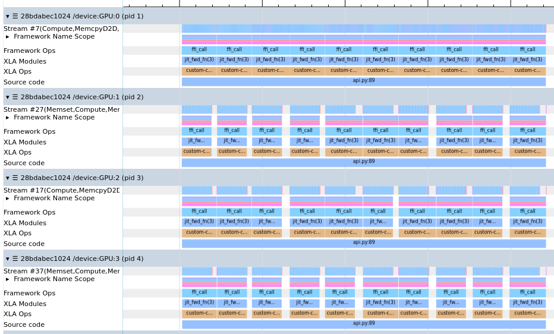

torch2jax

This package is designed to facilitate no-copy PyTorch calling from JAX under both eager execution and JIT. It leverages the JAX C++ extension interface, enabling operations on both CPU and GPU platforms. Moreover, it allows for executing arbitrary PyTorch code from JAX under eager execution and JIT.
The intended application is efficiently running existing PyTorch code (like ML models) in JAX applications with very low overhead.
This project was inspired by the jax2torch repository https://github.com/lucidrains/jax2torch and has been made possible due to an amazing tutorial on extending JAX https://github.com/dfm/extending-jax. Comprehensive JAX documentation https://github.com/google/jax also significantly contributed to this work.
Although I am unsure this functionality could be achieved without C++/CUDA, the C++ compilation is efficiently done using PyTorch's portable CUDA & C++ compilation features, requiring minimal configuration.
Install
$ pip install git+https://github.com/rdyro/torch2jax.git
torch2jax is now available on PyPI under the alias wrap_torch2jax:
$ pip install wrap-torch2jax
$ # then
$ python3
$ >>> from wrap_torch2jax import torch2jax, torch2jax_with_vjp
Tested on:
- CPU: Python: 3.9 3.10 3.11 3.12 & JAX Versions 0.4.26 0.4.27 0.4.28 0.4.29 0.4.30 0.4.31
- CUDA: Python 3.9 3.10 3.11 3.12 & JAX Versions 0.4.30 0.4.31
Usage
With a single output
import torch
import jax
from jax import numpy as jnp
from torch2jax import torch2jax # this converts a Python function to JAX
from torch2jax import Size, dtype_t2j # this is torch.Size, a tuple-like shape representation
def torch_fn(a, b):
return a + b
shape = (10, 2)
a, b = torch.randn(shape), torch.randn(shape)
jax_fn = torch2jax(torch_fn, a, b) # without output_shapes, torch_fn **will be evaluated once**
jax_fn = torch2jax(torch_fn, a, b, output_shapes=Size(a.shape)) # torch_fn will NOT be evaluated
# you can specify the whole input and output structure without instantiating the tensors
# torch_fn will NOT be evaluated
jax_fn = torch2jax(
torch_fn,
jax.ShapeDtypeStruct(a.shape, dtype_t2j(a.dtype)),
jax.ShapeDtypeStruct(b.shape, dtype_t2j(b.dtype)),
output_shapes=jax.ShapeDtypeStruct(a.shape, dtype_t2j(a.dtype)),
)
prngkey = jax.random.PRNGKey(0)
device = jax.devices("cuda")[0] # both CPU and CUDA are supported
a = jax.device_put(jax.random.normal(prngkey, shape), device)
b = jax.device_put(jax.random.normal(prngkey, shape), device)
# call the no-copy torch function
out = jax_fn(a, b)
# call the no-copy torch function **under JIT**
out = jax.jit(jax_fn)(a, b)
With a multiple outputs
def torch_fn(a, b):
layer = torch.nn.Linear(2, 20).to(a)
return a + b, torch.norm(a), layer(a * b)
shape = (10, 2)
a, b = torch.randn(shape), torch.randn(shape)
jax_fn = torch2jax(torch_fn, a, b) # with example argumetns
prngkey = jax.random.PRNGKey(0)
device = jax.devices("cuda")[0]
a = jax.device_put(jax.random.normal(prngkey, shape), device)
b = jax.device_put(jax.random.normal(prngkey, shape), device)
# call the no-copy torch function
x, y, z = jax_fn(a, b)
# call the no-copy torch function **under JIT**
x, y, z = jax.jit(jax_fn)(a, b)
For a more advanced discussion on different ways of specifying input/output
specification of the wrapped function, take a look at:
input_output_specification.ipynb
notebook in the examples folder.
Automatically defining gradients
Automatic reverse-mode gradient definitions are now supported for wrapped
pytorch functions with the method torch2jax_with_vjp
import torch
import jax
from jax import numpy as jnp
import numpy as np
from torch2jax import torch2jax_with_vjp
def torch_fn(a, b):
return torch.nn.MSELoss()(a, b)
shape = (6,)
xt, yt = torch.randn(shape), torch.randn(shape)
# `depth` determines how many times the function can be differentiated
jax_fn = torch2jax_with_vjp(torch_fn, xt, yt, depth=2)
# we can now differentiate the function (derivatives are taken using PyTorch autodiff)
g_fn = jax.grad(jax_fn, argnums=(0, 1))
x, y = jnp.array(np.random.randn(*shape)), jnp.array(np.random.randn(*shape))
print(g_fn(x, y))
# JIT works too
print(jax.jit(g_fn)(x, y))
Caveats:
jax.hessian(f)will not work sincetorch2jaxuses forward differentiation, but the same functionality can be achieved usingjax.jacobian(jax.jacobian(f))- input shapes are fixed for one wrapped function and cannot change, use
torch2jax_with_vjp/torch2jaxagain if you need to alter the input shapes - in line with JAX philosphy, PyTorch functions must be non-mutable, torch.func has a good description of how to convert e.g., PyTorch models, to non-mutable formulation
NEW: Performant multi-gpu (experimental)
User feedback greatly appreciated, feel free to open an issue if you have any questions or are running into issues: https://github.com/rdyro/torch2jax/issues/new.
torch2jax should now support efficient multi-gpu calling. JAX, broadly,
provides 3 main ways of calling multi-device code:
- shard_map - per-device view, the recommended way of using torch2jax
- supports sharded multi-GPU arrays called in parallel
- supports automatically defining gradients
- jax.jit - the jit function supports automatic computation on sharded
inputs; this is currently partially supported by providing the sharding spec
of the output
- jax.pmap - (DOES NOT WORK) works somewhat like shard_map, but with
jnp.stack instead of jnp.concatenate over devices, please use shard_map
instead
# Data-parallel model
import functools
import copy
import torch
import torch.nn as nn
import jax
from jax.experimental.shard_map import shard_map
from jax.sharding import PartitionSpec as P, NamedSharding
from torch2jax import torch2jax, torch2jax_with_vjp, tree_t2j
def _setattr(mod, key, delim: str = "."):
if delim not in key:
setattr(mod, key, None)
else:
key, key_remaining = key.split(delim, 1)
_setattr(getattr(mod, key), key_remaining, delim=delim)
def _strip_model(model):
for key in dict(model.named_parameters()).keys():
_setattr(model, key, delim=".")
if __name__ == "__main__":
model = nn.Sequential(nn.Linear(1024 * 1024, 1024), nn.SiLU(), nn.Linear(1024, 16)).to("cuda:0")
params = dict(model.named_parameters())
[p.requires_grad_(False) for p in params.values()]
_strip_model(model) # remove params from the model, leaving only a skeleton
def call_model_torch(x, params):
ys = []
for _ in range(30):
# functional_call uses the model in-place, we need a local copy
local_model_skeleton = copy.deepcopy(model)
ys.append(torch.func.functional_call(local_model_skeleton, params, x))
return sum(ys)
devices = jax.devices("cuda")
mesh = jax.make_mesh((len(devices),), P("x"), devices=devices)
params_sharding = NamedSharding(mesh, P()) # fully replicated
batch_sharding = NamedSharding(mesh, P("x", None)) # sharded along batch
x = jax.jit(
lambda: jax.random.normal(jax.random.key(0), (128, 1024 * 1024)),
out_shardings=batch_sharding,
)()
params = jax.tree.map(lambda p: jax.device_put(p, params_sharding), tree_t2j(params))
params_spec = jax.tree.map(lambda _: params_sharding.spec, params)
@jax.jit
@functools.partial(
shard_map,
mesh=mesh,
in_specs=(batch_sharding.spec, params_spec),
out_specs=batch_sharding.spec,
check_rep=False,
)
def fwd_fn(x, params):
return torch2jax_with_vjp(call_model_torch, x, params, output_shapes=x[:, :16])(x, params)
y = fwd_fn(x, params)
# OR using JIT (but without gradients)
fwd_fn = jax.jit(
torch2jax(
call_model_torch, x, params, output_shapes=x[:, :16], output_sharding_spec=P("x", None)
)
)
y = fwd_fn(x, params)

Fig: Overlapping torch calls on multiple devices (RTX A4000 x 4)
Note:
jax.vmap's semantics might indicate that it can compute on sharded arrays, it can work, but it is not recommend, and because oftorch2jax's implementation will likely be executed sequentially (and likely be slow).
Dealing with Changing Shapes
You can deal with changing input shapes by calling torch2jax (and
torch2jax_with_vjp) in the JAX function, both under JIT and eagerly!
@jax.jit
def compute(a, b, c):
d = torch2jax_with_vjp(
torch_fn,
jax.ShapeDtypeStruct(a.shape, dtype_t2j(a.dtype)),
jax.ShapeDtypeStruct(b.shape, dtype_t2j(b.dtype)),
output_shapes=jax.ShapeDtypeStruct(a.shape, dtype_t2j(a.dtype)),
)(a, b)
return d - c
print(compute(a, b, a))
Timing Comparison vs pure_callback
This package achieves a much better performance when calling PyTorch code from JAX because it does not copy its input arguments and does not move CUDA data off the GPU.

Current Limitations of torch2jax
- compilation happens on module import and can take 1-2 minutes (it will be cached afterwards)
- in the Pytorch function all arguments must be tensors, all outputs must be tensors
- all arguments must be on the same device and of the same datatype, either float32 or float64
- an input/output shape (e.g.
output_shapes=kw argument) representations (for flexibility in input and output structure) must be wrapped intorch.Sizeorjax.ShapeDtypeStruct - the current implementation does not support batching, that's on the roadmap
- the current implementation does not define the VJP rule, in current design, this has to be done in Python
Changelog
- version 0.6.0
- proper multi-GPU support mostly with
shard_mapbut also viajax.jitautomatic sharding shard_mapand automaticjax.jitdevice parallelization should work, butpmapdoesn't work- removed (deprecated)
- torch2jax_flat - use the more flexible torch2jax
- added input shapes validation - routines
- proper multi-GPU support mostly with
- version 0.5.0
- updating to the new JAX ffi interface
- version 0.4.11
- compilation fixes and support for newer JAX versions
- version 0.4.10
- support for multiple GPUs, currently, all arguments must and the output must be on the same GPU (but you can call the wrapped function with different GPUs in separate calls)
- fixed the coming depreciation in JAX deprecating
.device()for.devices()
- no version change
- added helper script
install_package_aliased.pyto automatically install the package with a different name (to avoid a name conflict)
- added helper script
- version 0.4.7
- support for newest JAX (0.4.17) with backwards compatibility maintained
- compilation now delegated to python version subfolders for multi-python systems
- version 0.4.6
- bug-fix: cuda stream is now synchronized before and after a torch call explicitly to avoid reading unwritten data
- version 0.4.5
torch2jax_with_vjpnow automatically selectsuse_torch_vjp=Falseif theTruefails- bug-fix: cuda stream is now synchronized after a torch call explicitly to avoid reading unwritten data
- version 0.4.4
- introduced a
use_torch_vjp(defaulting to True) flag intorch2jax_with_vjpwhich can be set to False to use the oldtorch.autograd.gradfor taking gradients, it is the slower method, but is more compatible
- introduced a
- version 0.4.3
- added a note in README about specifying input/output structure without instantiating data
- version 0.4.2
- added
examples/input_output_specification.ipynbshowing how input/output structure can be specified
- added
- version 0.4.1
- bug-fix: in
torch2jax_with_vjp, nondiff arguments were erroneously memorized
- bug-fix: in
- version 0.4.0
- added batching (vmap support) using
torch.vmap, this makesjax.jacobianwork - robustified support for gradients
- added mixed type arguments, including support for float16, float32, float64 and integer types
- removed unnecessary torch function calls in defining gradients
- added an example of wrapping a BERT model in JAX (with weights modified from JAX),
examples/bert_from_jax.ipynb
- added batching (vmap support) using
- version 0.3.0
- added a beta-version of a new wrapping method
torch2jax_with_vjpwhich allows recursively defining reverse-mode gradients for the wrapped torch function that works in JAX both normally and under JIT
- added a beta-version of a new wrapping method
- version 0.2.0
- arbitrary input and output structure is now allowed
- removed the restriction on the number of arguments or their maximum dimension
- old interface is available via
torch2jax.compat.torch2jax
- version 0.1.2
- full CPU only version support, selected via
torch.cuda.is_available() - bug-fix: compilation should now cache properly
- full CPU only version support, selected via
- version 0.1.1
- bug-fix: functions do not get overwritten, manual fn id parameter replaced with automatic id generation
- compilation caching is now better
- version 0.1.0
- first working version of the package
Roadmap
- call PyTorch functions on JAX data without input data copy
- call PyTorch functions on JAX data without input data copy under jit
- support both GPU and CPU
- (feature) support partial CPU building on systems without CUDA
- (user-friendly) support functions with a single output (return a single output, not a tuple)
- (user-friendly) support arbitrary argument input and output structure (use pytrees on the Python side)
- (feature) support batching (e.g., support for
jax.vmap) - (feature) support integer input/output types
- (feature) support mixed-precision arguments in inputs/outputs
- (feature) support defining VJP for the wrapped function (import the experimental functionality from jit-JAXFriendlyInterface)
- (tests) test how well device mapping works on multiple GPUs
- (tests) setup automatic tests for multiple versions of Python, PyTorch and JAX
- (feature) look into supporting in-place functions (support for output without copy)
- (feature) support TPU
Related Work
Our Python package wraps PyTorch code as-is (so custom code and mutating code will work!), but if you're looking for an automatic way to transcribe a supported subset of PyTorch code to JAX, take a look at https://github.com/samuela/torch2jax/tree/main.
We realize that two packages named the same is not ideal. As we work towards a solution, here's a stop-gap solution. We offer a helper script to install the package with an alias name, installing our package using pip under a different name.
$ git clone https://github.com/rdyro/torch2jax.git- clone this repo$ python3 install_package_aliased.py new_name_torch2jax --install --test- install and test this package under the namenew_name_torch2jax- you can now use this package under the name
new_name_torch2jax